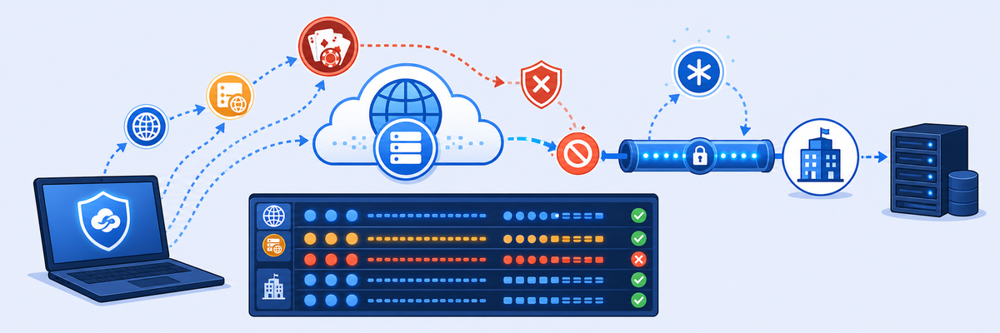

Lab 7: Logs and Monitoring
MONITORING
Explore the monitoring and troubleshooting capabilities of the Zero Trust Branch platform. You'll analyse packet logs, flow logs, and real-time alarms to understand traffic patterns and validate policy enforcement, then review Web Insights for your POD.
- View and filter Packet Logs and Flow Logs scoped to your POD
- Expand a log record to read all fields (tabular or JSON)
- Review Alarms filtered by severity
- Run a Web Insights query for your POD location

- Navigate to Logs [1] › Packet Logs [2]. Click the Calendar icon [3], set the time frame to 3 hours, and click Apply [4].
- Click the + icon [1] and add a filter — Field: Policy, Operator: is, Value:
pod##[2] — then Add Filter [3].
- Click the toggle/dialog icon on any log to view its details.
- Navigate to Logs [1] › Flow Logs [2]. Click the Calendar [3], set 3 hours, and Apply [4].
- Click + [1] and add the same filter — Policy is
pod##[2] — then Add Filter [3]. - Expand any flow log to view its details (tabular or JSON).
- Navigate to Administration › Alerts › Zero Trust Branch › Alarms. A list of warning alarms appears (if none, check your filter settings).
- Filter by severity — Emergency, Alert, Critical, Error, Warning, Notice, Informational, Debug. Here, Warning alarms are selected.
- In Experience Center, navigate to Logs [1] › Web Insights [2].
- Select the Logs tab [1], click Add Filter [2], and choose User by typing "user" [3].
- From the drop-down [1], choose your POD location (e.g.
pod##-student-location) [2], then click Done [3]. - Select Run Query.
- After a few seconds the log events for your POD appear — scroll horizontally for more fields, vertically for more events.
Note: You can also analyse the Insights tab for your POD using the same filter.
Done: You can now find and read branch telemetry across packet, flow, alarm, and web logs. Next, troubleshoot and debug the environment.
MENTAL NOTE
Packet logs = per-packet detail (why one packet was dropped); flow logs = per-session summary (traffic patterns). Both under Logs › Insights › Zero Trust Branch; filter Policy is
pod## + 3-hour window, then expand a record (tabular/JSON). Alarms: Administration › Alerts, triage by severity (Emergency→Debug). Web Insights: Logs tab → filter User → your POD location → Run Query. Always scope to your POD.ASK A QUESTION
ADD A NOTE